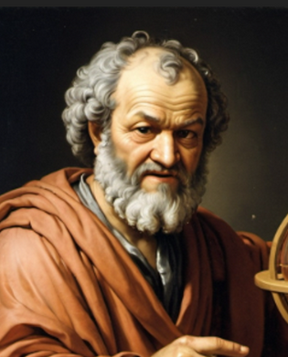
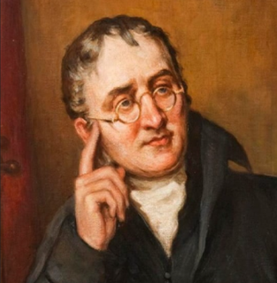
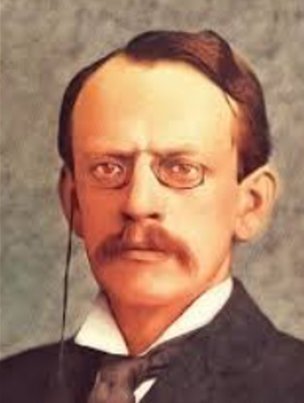
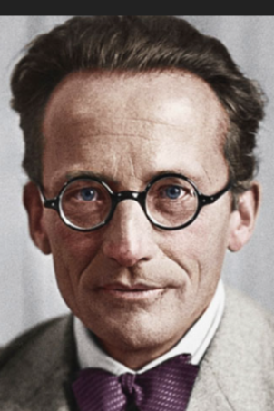

Proposed the idea of indivisible particles called "atomos".

Developed the Atomic Theory of Matter based on chemical weights.

Discovered the electron and proposed the "plum pudding" model.
Proved the existence of a dense, positive nucleus.
Introduced quantized electron orbits around the nucleus.

Developed the quantum mechanical model using probability clouds.